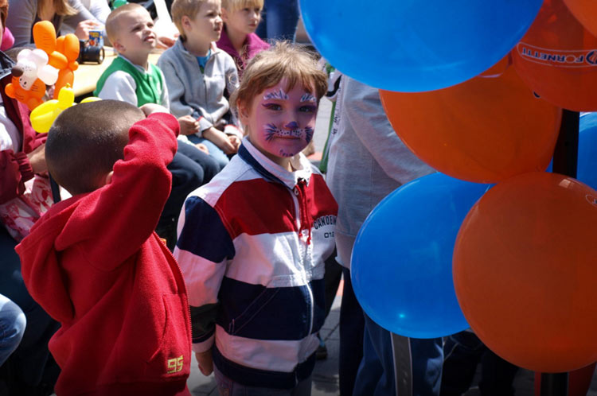
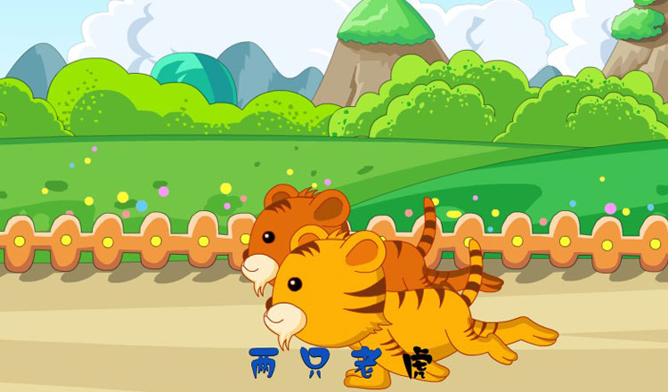

每个人小时候都有两个最贴心的“伙伴”——玩具和儿歌。形形色色的玩具，或用来打发无聊的时间，或用来习得逻辑、规则。而儿歌，或许是玩具之外，更贴近精神层面的心灵伴侣。从“我在马路边，捡到一分钱” 我们了解了一分钱（想什么呢，再多的钱也要交给警察叔叔）不能破坏我们的气节；“太阳当空照，花儿对我笑，小鸟说早早早，你为什么背上小书包”在很长一段时间内成了我们上学路上的好朋友……
国际不同、语言不同，但是美妙轻快的旋律是世界各国儿童都需要的。1976年，世界儿歌日在比利时克诺克两年一度的国际诗歌会上创立，13岁以下的儿童每年在3月21日举行这个节日的庆祝活动。
每年的儿歌日都会根据当时的社会背景制定一个主题，对孩子进行正确的引导和教育。这项活动立意高远、受众群体巨大、社会意义深远，因而得到了联合国教科文组织的认可和支持，社会各界也是积极支持、踊跃参与。
从70后、80后到90后甚至是00后，人人张口就来的几首儿歌中肯定有一首是两只老虎。一直没有眼睛、一直没有尾巴，奇怪又可怜的老虎或许成为了很多小朋友的疑惑。在这疑惑之外，这首歌其实包含了不少的红色过往……
《两只老虎》的曲调来自于法国童谣，因曲调轻快上口而被多国引进作为本国的儿歌。1930年这首歌被引进中国，当时正值北伐战争的关键时期，为了鼓舞士气黄埔军校政治教官重新填词。被重新填的词是这样的：“打倒列强，打倒列强，除军阀，除军阀！努力国民革命，努力国民革命，齐奋斗，齐奋斗。”
近年来，几代人传唱的儿歌都没有太大变化，一些国内人士曾陆续发动了一些“新童谣征集”活动，新的儿歌和童谣逐渐走进了孩子们的课堂，但收效甚微，传唱率并不高。孩子大多还是唱着父辈甚至是祖辈传下来的儿歌，有时为了提高英语水平也会学些英文儿歌，真正让孩子们喜欢又流传很广的新儿歌并不多见。与此同时，流行歌曲也“乘虚而入”，《嘻唰唰》、《老鼠爱大米》在小学校园中的传唱率相当高，很多小学生歌舞活动的音乐都采用流行音乐，儿歌正面临着十分尴尬的处境。
1、每年的3月21日是世界儿歌日，13岁以下的儿童在这天会举行各种庆祝活动；
2、孩子的音乐世界被流行歌曲冲击，当前儿歌库存急需更新！